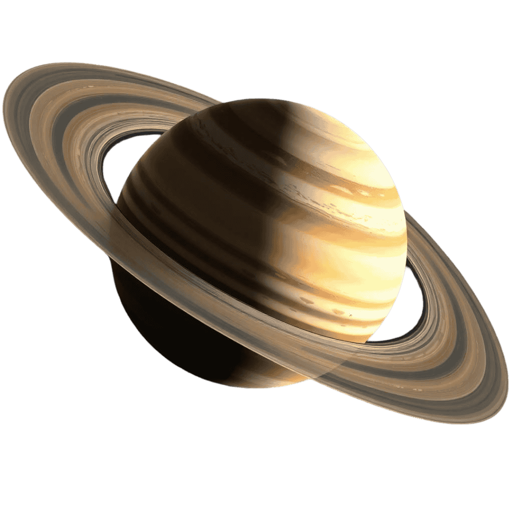

Saturn
The Second Largest planet in our solar system is named after the Roman God of agriculture, wealth and time. Saturn is famous for its distinct ring system, which consists of 7 distinct ringlets.
Saturn's many moons are a a point of interest for scientists, particularly Enceladus, a small icy moon with key ingredients for life, liquid water, essential organic chemistry, and active energy sources.
Pictures

Facts!
-
The rings are perhaps only 100 million years old, making it much younger than Saturn itself.
-
The rings are labelled A-G, with A, B, and C being the brightest and closest to the planet.
-
Saturn has 285 known moons.
-
Various probes have visited Saturn. One of them, Cassini-Huygens consisted of the Cassini orbiter and Huygens probe (Which landed on Titan, one of Saturn's moons).